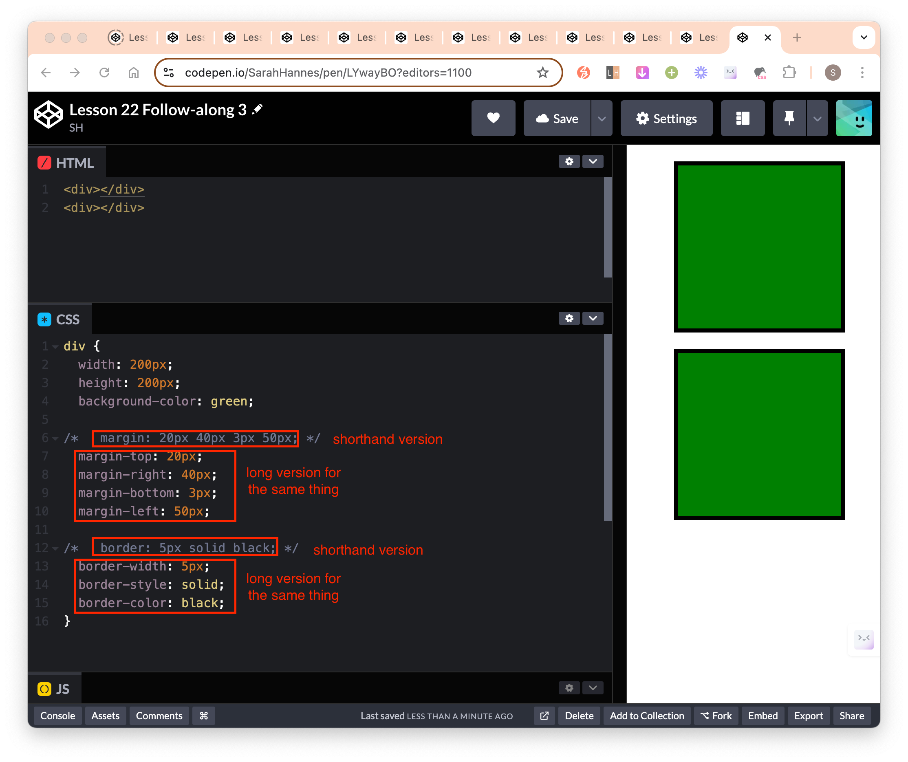

Front-end Web Dev Crash Course Part 3/4
Lesson 19
Video timestamp: HTML + JavaScript “Meme Generator” challenge
Lesson 20
Video timestamp: CSS Crash Course

- All we’re trying to do in CSS is to target a specific HTML element and apply some style/layour to it.
- get specific element using CSS Selector
.some-class - set value to a specific CSS property of that specific element
color: #211E1E
- get specific element using CSS Selector
- Relationship between HTML, CSS and Javascript (simple example)
The most specific CSS selector take precedence (selector by Id) when multiple style is applied
HTML:
<p id='abc' class='para-elem'>Some text</p>CSS: ``` /* target by tag */ p { color: red; }
/* target by class */ .para-elem { color: blue; }
/* target by id */ #abc { color: pink; } ```
Javascript: ``` // target by tag (will find the first HTML element with the same tag) document.querySelector(‘p’)
// target by class (will find the first HTML element with this specific class) document.querySelector(‘.some-class’)
// target by id (will find the specific element with this id) document.querySelector(‘#some-id’) ```
- Methods to select HTML elements for styling by: tags, class, id, combinators.
Combinators
Descendents selector: Target every descendents of pre-selector.
- Syntax:
pre-selector descendent-selector(ie I want to target any actual selector that exist as a descendent of pre-selector) - the parent’s selector (here as
.main-container) is called pre-selector - the actual element we want to style selector (here as
li) is called the actual selector
- Syntax:
Children selector: Target only the direct children of a pre-selector.
- Syntax:
pre-selector > children-selector
- Syntax:
Adjacent Sibling selector: Select only the first sibling that directly follow a specific element.
- Syntax:
pre-selector + sibling-selector - Cons: if we change the structure of our HTML, this rule will break. Eg if we wraped the
<ul>in a<div>, then it will break because<p>will no longer be the direct sibling of<ul>.
- A better alternative is to give the elements a class, then directly style the class like below. Now the CSS rule will not break even if we change the structure.

- Syntax:
Direct Sibling selector: Select all direct siblings that directly follow a specific element.
- Syntax:
pre-selector ~ siblings-selector
- Syntax:
Select specific tag & class: Select only elements that are of specific tag that belongs to specific class.
- Syntax:
tag-selector[class="class-selector"] - Use this when we have many tags belonging to the same class, but we only want to select a specific tag. Notice the
<div>also belong to the same class, but is not selected.
- Syntax:
When we want to have unique styles for different class but also have some styles that are shared across. Eg let’s say we want the 2 boxes to have the same width, height but everything else unique to each class:
- Method 1: Styling for each class
- Notice we have repetitive
widthandheightspecified for each of the class style.
- Notice we have repetitive
- Method 2: Shared styling
- Notice we’ve removed repetitive
widthandheightand move them to shared styling. - Syntax:
selector1 , selector2(ie I want to targetselector1ANDselector2) Here selector can be of tag, class, id or whatever.
- Notice we’ve removed repetitive
- Method 3: Give multiple classes to a single element
- In HTML, give the element another class using syntax
<tag class="class-1 class-2 class-n"> - Then we could directly refer to the specific class we want to style in CSS

- In HTML, give the element another class using syntax
- Method 1: Styling for each class
Pseudo-selector: Different styling based on the element current state
- Add styling for mouse hovering on button element.

- Add styling for mouse hovering on button element.
Two factors for determining CSS precedence
Location of the CSS rule in the file
- If there are multiple style applied to the same element, the bottom most style will be applied. Unless there are selectors that is higher up, but has more specificity.
- CSS is read from top to bottom.

Specificity of the CSS rule
id (most important) > class > tag (least important)take precedence when applying CSS rule.


- More selector = higher precedence (therefore combinators (higher precedence) > id > class > tag)
- How to know? count number of ID, class, tags

- How to know? count number of ID, class, tags
- Some gotchas:
- HTML inline styles take precedence even if we select elements using id

- However, we can override the inline style by adding
!important. This will apply even if we use tag selector (which is the least importance compared to class and id)- In reality, we almost never want to use inline styles and
!importantselectors.
- In reality, we almost never want to use inline styles and
- HTML inline styles take precedence even if we select elements using id
Reference
- FrontEnd Mentor
- MDN/Reference Index: List of all CSS properties that we can use for styling
- MDN/Pseudo-class: Allow us to style an element differently based on different states
Lesson 21
Video timestamp: The CSS Box Model
## Box Model - What is box model? - The margin -> border -> spacing/padding surrounding content. - Tells us how much space a HTML element represents within the webpage. - The property that plays into that are: width, height, padding, border. - Margin does not define the space taken up by that individual element. It adds space around elements, eg if you have 2 elements and they’re squished together, you can use margin to space them out a little bit. 
CSS properties
display:- By default, most HTML element will have a display property of ‘block’.
display: block;blockwill make the HTML element occupy 100% of its container space (width), on a new line.- If we did not specify the
height, it will take up the total height of the content within it. blockelement respect its width and height properties – ie if we explicitly set width properties, it will no longer occupy 100% of the page width. The same applies to height.
- But some HTML element have different default, eg
<span>element has defaultdisplay: inline;inlinewill make the HTML element share the same line as the element before it. They don’t break to a new line by default.- They don’t occupy the whole of the space, but only occupy the size of the content within them.

inlineelement does not respect width, height even when it is explicitly specified.
inline-blockis combination of bothinlineandblock.- Has all properties of
inlinebut now it respects the width and height properties.
- Has all properties of
- By default, most HTML element will have a display property of ‘block’.
box-sizing:- Default value is
content-box.- If the property is
content-box, the way to calculate how much total size a particular element is taking up is as shown in the image below.
- If we add padding to
box-sizing: content-box, it will add space to the element. This might make the element break out of its parent element if it is nested.
- If the property is
- If we change this property to
border-box, it will change how (width, height, padding, border and margin) properties relates to each other.- We can specify the total height and width we want the entire element to occupy without having to calculate each of the individual component (width, height, padding, border) takes up.

- If we add padding to
box-sizing: content-box, it will not add space to the element, but will adjust the content to (make it smaller), so that thetotal height + padding = specified heightandtotal width + padding = specified width.
- We can specify the total height and width we want the entire element to occupy without having to calculate each of the individual component (width, height, padding, border) takes up.
- Default value is
CSS reset: To reset all element in the whole document. ``` /* here we’re changing the box-sizing on the root element
to border-box */ html { box-sizing: border-box; }
/* () asterics here is a wildcard (targetting all elements in this entire document) and set box-sizing to inherit whatever the property set for the root element. / , :before, *:after { box-sizing: inherit; } ```

Lesson 22
Video timestamp: Most common CSS properties
Most common CSS properties
positionproperty: one of[static (default), absolute, relative, fixed, sticky (newer - might not be supported in some browser)]position: fixed: Fixed element visibly takes up “space” but not from the prespective of other elements on the page.- Takes the element out of the flow of the document and fixed its position on the page relative to the viewport (edges of the browser’s window).
- Need to explicitly specify the width and height of the element.

position: relative: When we set an element to be absolute or relative, it enables a new property called z-index (make the page 3D instead of 2D - now element can overlap one another)

- To make the navbar sit on top of the element with
position: relative, we have to specifyz-index: 0;for the<nav>styling. - We can move the element around relative to itself when we set
position: relative. ie if we settop: 20pxit will move the element down from its current position by 20px. This is also applicable tobottom, left, rightproperties. - Might be useful when we have stuborn HTML element that we need to move around but can’t quite do it with normal CSS properties.
- To make the navbar sit on top of the element with
position: absolute: Pull the element out of flow of the document but we’re positioning them relative to other element (which has either relative or absolute position) that is directly on top of it (its parent). If there is no other element on top of it that has either relative or absolution positioning, it will make this element relatively positioned according to the root<html>element.top, bottom, left, rightoffsets of this element will be based on the position of its next highest element that has relative or absolute positioning. (and not offsets based on the viewport)

CSS Measurement Units
- pixels
- percentages
- The prefered way to set width, height as we move away from desktop to mobile (responsive design).
- So that as we resize the window, the element will not get cut off from the viewport, and always stays x% relative the webpage.

Font measurement units
- How to define font sizes:
- It gets difficult to define font sizes for each text element one at a time, so we generally target the root element
<html>and have everything else be relative to the root font size. - Default font-size is generally 16px.
- rem and em units allow us to define font-size (root or parent) one time and have everything else be relative to that.
- Eg if we have a webapp and user starts complaining that the font-size is too small, then we can just change the font-size one time at the root level, then everything else will be relative to that font-size.
- It gets difficult to define font sizes for each text element one at a time, so we generally target the root element
- rem: relative to the root
<html>element- 1rem = 100% of the size of the text in the root element
- 1.2rem = 120% of the size of the text in the root element (eg if the root font size is 16px then 120% * 16px = 19.2px)
- em: relative to its parent element
- same calculation as rem unit.
Custom fonts
- To add custom fonts (in local environment):
- Go to Google font and pick a font we like
- Copy paste the provided
<link>snippet into<head>section of our html file. - Copy paste the
font-familyproperty into our css file. - Link the CSS file to HTML file.


- To add custom fonts (in codepen environment):
- Go to Google font and pick a font we like
- Copy the provided
<link>snippet and paste it to Settings -> “Stuffs for ” - Copy the provided
font-familyproperty and paste it to CSS section.
- 4 font properties that are highly relevant to know:
font-family: define what all text in your webpage will inherit. Often we define it once for<html>or<body>tag and this is going to apply to every font in the webpage.- We can give 2 values for
font-family(it’s not a must to give it 2 values). If we give it 2 values egfont-family: Georgia, serif, then the first argument will be the default font-family of our webpage, and the second argument will be the fallback font. - If the font-family name is 2 words, we need to put them in brackets eg “Gill Sans”.
- We can give 2 values for
font-weight: specify the thickness of the font.- We can only give the width we imported. Eg in the example below, we can set anything in between 400-700.

- We can only give the width we imported. Eg in the example below, we can set anything in between 400-700.
line-height: spacing in between lines of text.color: Specify text color. Check out documentation for a list of available colors.- Can be defined as hex, rgb, rgba
- rgba = the first 3 numbers are the values for red, green and blue. The last value define the opacity. 100% opacity = 1. In the example below, we set it to 30% opacity.

Set background image

Shorthand

4-Step method to write CSS and HTML
 1. Figure out what you want to put on the page – design / wireframing 2. How do you want to arrange elements on the page with HTML – the HTML document 3. How to use CSS to achieve the layout – the layout 4. How to style the elements – styling: ie color, margin, padding, etc
User story
- Something that we will write down in the requirements gathering phase of building webpage.
- Should list out all the things a user should be able to do if this is implemented correctly.
Reference
- MDN/Font Family: List of available font family
- Google Fonts: Free custom fonts we can use
- MDN/Color: List of available colors
- Abode Color: Where we can explore color themes and complementary colors.
- MDN/Background Position: background-position documentation